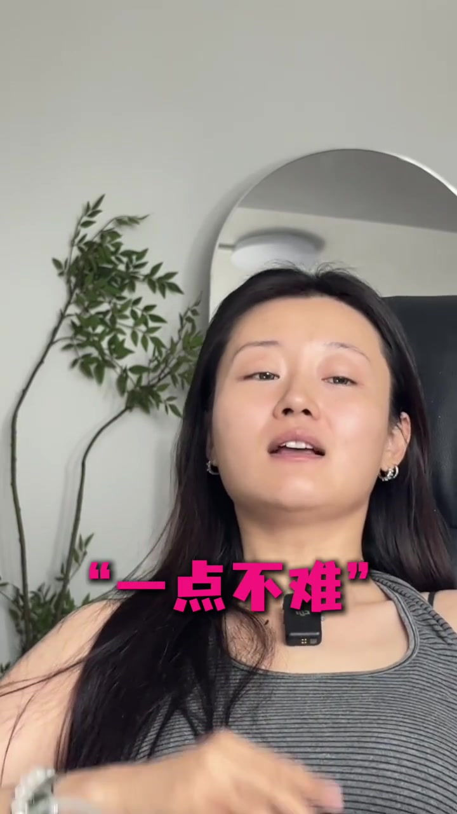
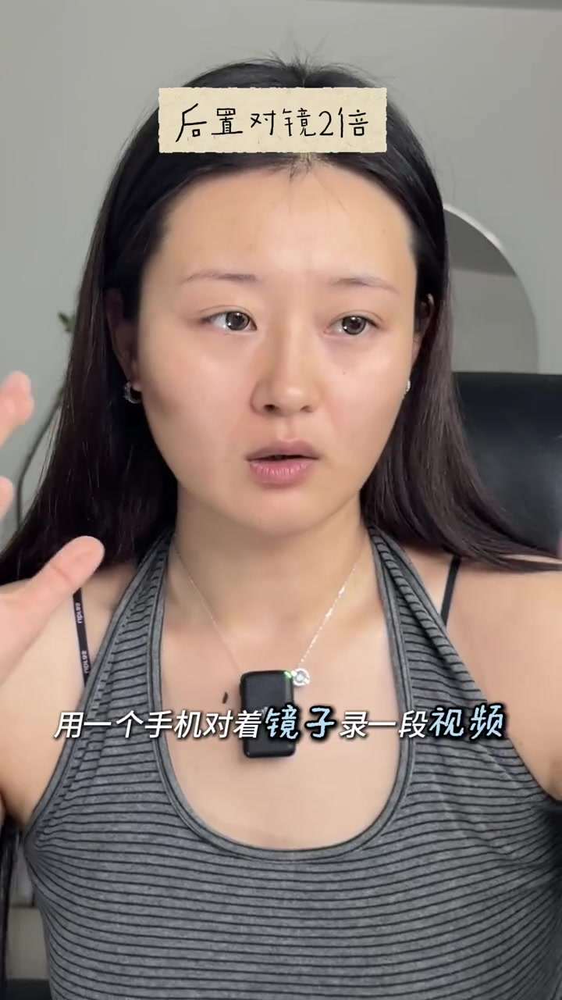
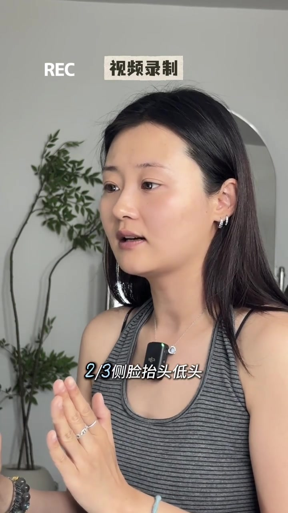
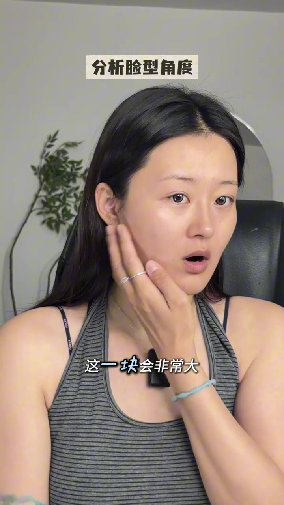
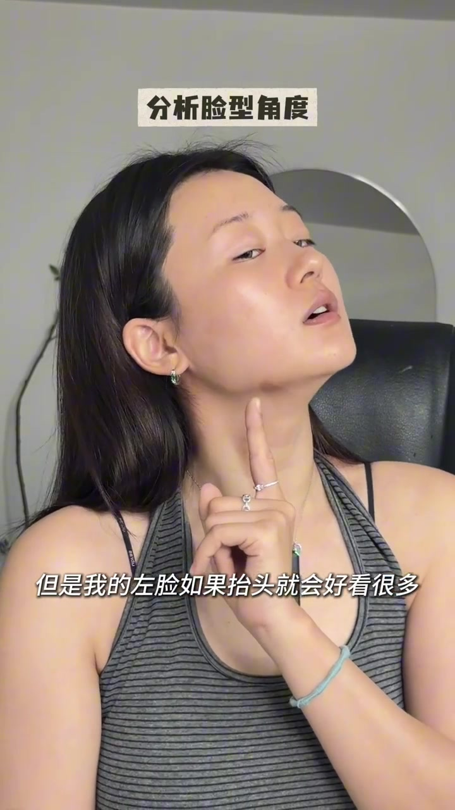
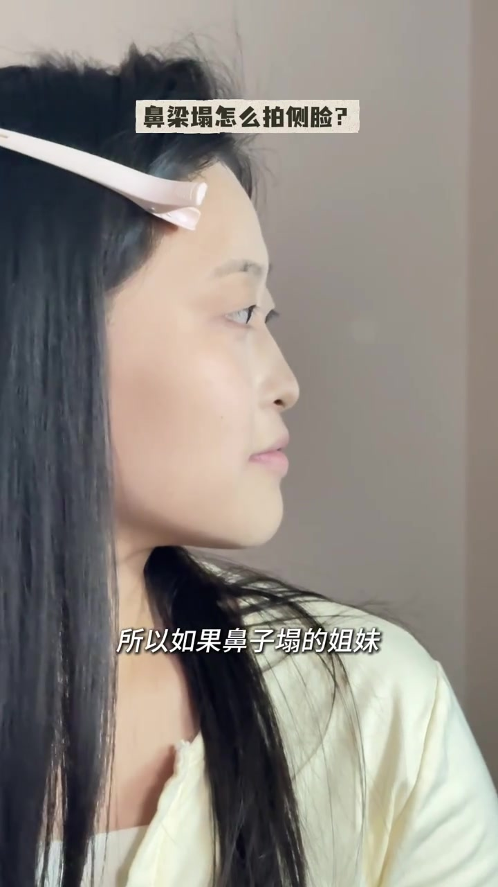
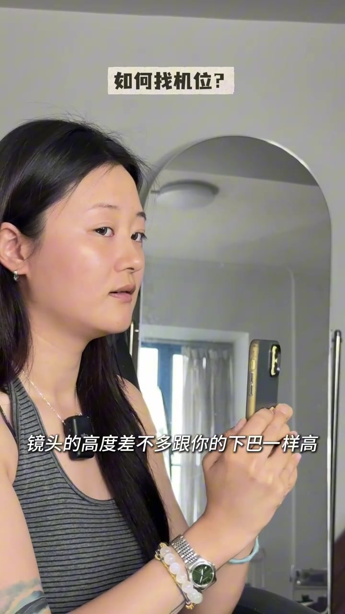
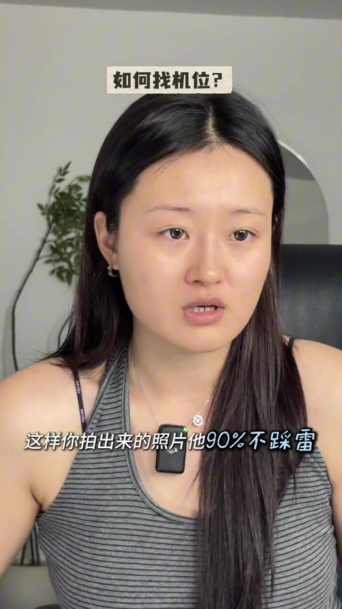

开场：方圆脸拍照一点都不难
UP 主对着镜头直接破题：方圆脸拍照一点都不难，只要找到正确的角度。她要教的是「出片真正的绝招」——这套方法不要求搭子很会拍照、很会找角度，只要自己会找角度就够了。画面大字「一点不难」先把心理门槛压下去。
画面字幕：「是方圆脸出片 真正的绝招」；口播大意：不需要搭子会找角度，自己会找就可以。
说明：Whisper 把「方圆脸」听成「方玉蓝」，把「出片」听成「出品」。下文以可见字幕为准；末尾转录区仍保留原始分段。

侧脸谣言：不是没拍侧脸，是没找对角度
她先对上常见说法：「很多博主都在说，方圆脸就要拍侧脸。」可观众会发现自己拍的侧脸就是不好看。为什么？不是侧脸这个方向错了，而是还没有找到自己真正好看的角度。于是第一步变成：先了解自己哪些角度好看。
画面字幕：「你一定听过很多博主都在说」→ 口播：你拍的侧脸就是不好看，因为没有找到自己真正好看的角度。
Whisper 将「博主」识为「博者」。对照字幕校正。
后置对镜 2 倍：把「别人给你拍照」先录一遍
操作很具体：用一部手机对着镜子录一段视频。顶部标签写着「后置对镜2倍」——这是在模拟别人用后置给你拍照的效果，而不是前置自拍的宽窄感。示范动作按顺序走：纯正脸、微侧脸、抬头、低头、纯侧脸再抬头低头；然后换另一边脸，做三分之二侧脸、抬头、低头、纯侧脸、抬头、低头。
画面字幕：「用一个手机对着镜子录一段视频」；标签：「后置对镜2倍」。


分析左脸：2/3 侧脸这块会很大，抬头更稳
录完立刻复盘。她发现自己的左脸不适合三分之二侧脸——指着下颌／脸颊区域说「这一块会非常大」，因为左脸更大。解决办法不是硬拍 2/3：左脸如果抬头，就会好看很多；低头不行，这块非常肉。章节标签是「分析脸型角度」。
画面字幕：「这一块会非常大」；「但是我的左脸如果抬头就会好看很多」。


右脸更小：2/3 侧脸抬头低头都 OK
对比右脸：因为它更小一点，所以比较适合三分之二侧脸——无论抬头低头都好看，纯侧脸也 OK。但她马上加了一句重点：你不用非要像她一样一定去拍纯侧脸。个人案例不等于通用答案。
口播大意：右脸更小，适合 2/3；侧脸也 OK，但不必人人都硬拍纯侧脸。
鼻梁塌怎么拍侧脸：2/3 比纯侧更稳
顶部提问换成「鼻梁塌怎么拍侧脸？」。很多人鼻子高度不够时，纯侧脸会把整块脸往内凹，鼻梁显得更矮。因此她建议多尝试三分之二侧脸：鼻子不会显得那么矮。字幕直接写：「所以如果鼻子塌的姐妹」「2/3侧脸是你的最优选择」。她还用妹妹鼻子很塌、侧脸却好看的个人例子作旁证，并提醒别急着说她不对——这是经验立场，不是测量结论。
画面字幕：「2/3侧脸是你的最优选择」；「所以如果鼻子塌的姐妹」。
Whisper 将「鼻子塌的姐妹」识为「鼻子它的前面」，「最优选择」识为「最有选择」。以字幕为准。

第二点：朋友手机倾斜，你要对应调整
章节切到「如何找机位？」。当你已经知道左／右脸、抬头还是低头哪个好看，下一步是看朋友手机的倾斜程度，再用对应角度去面对镜头。她承认这听起来有点难，但先记住——「会真的很有用」。基准法：尽量让手机垂直于地面，镜头高度差不多跟下巴一样高；这个角度不容易形成畸变。
画面字幕：「你要学的是你朋友手机他倾斜程度」；「镜头的高度差不多跟你的下巴一样高」；「这个角度是不容易形成畸变的哎」。
Whisper 将「很有用」识为「很拥有」，「畸变」识为「机变」。对照字幕校正。

手机前倾就俯视，上仰就侧脸抬头
若朋友拍照时手机不自觉往前倾：可以让对方保持这个倾斜，把手抬高一点，自己则蹲低一点或坐下——方圆脸拍俯视角度会非常显脸小，然后再照样找自己好看的侧脸。若手机有点往上仰：不要平视镜头，也不要低头，试一下侧脸并抬头。收尾字幕：「这样你拍出来的照片他90%不踩雷」。
画面字幕：「方圆脸拍俯视的角度」；「没错我们就不要平视镜头了」；「这样你拍出来的照片他90%不踩雷」。
Whisper 将「方圆脸拍俯视」识为「方越你拍俯视」，「显脸小」识为「显连小」，「不踩雷」识为「复材类」。以字幕为准。

补充资料：片中「90%不踩雷」是 UP 主经验话术，不是对照实验数据；左右脸差异与鼻梁高度因人而异，需以自己的对镜录像为准。